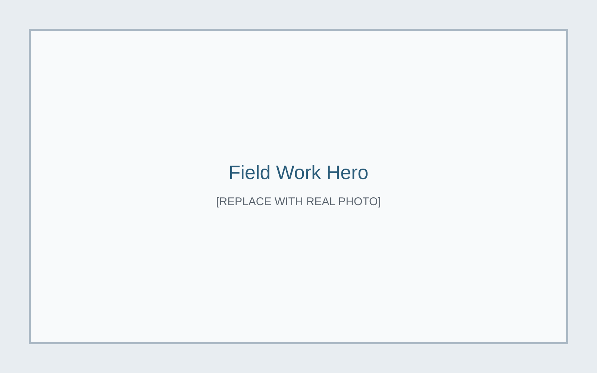
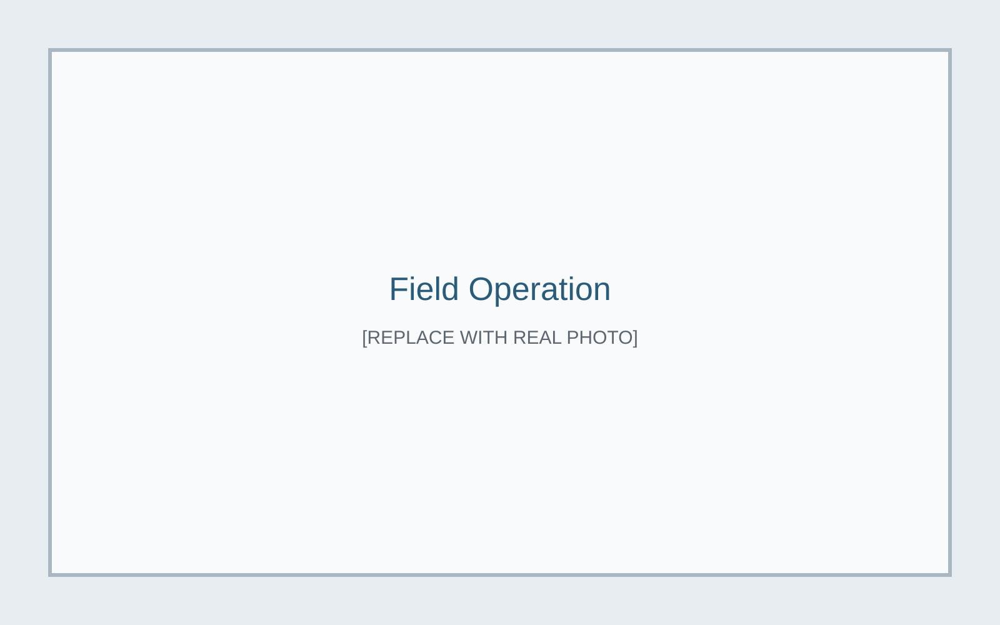
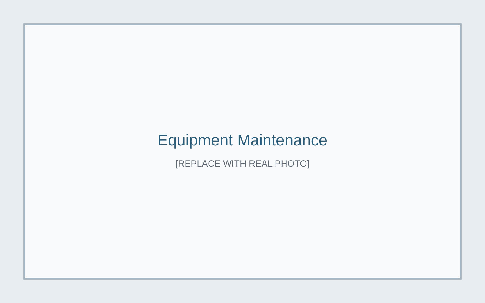
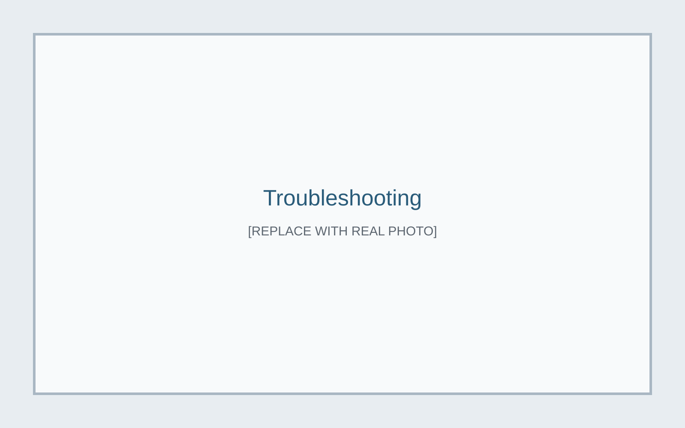
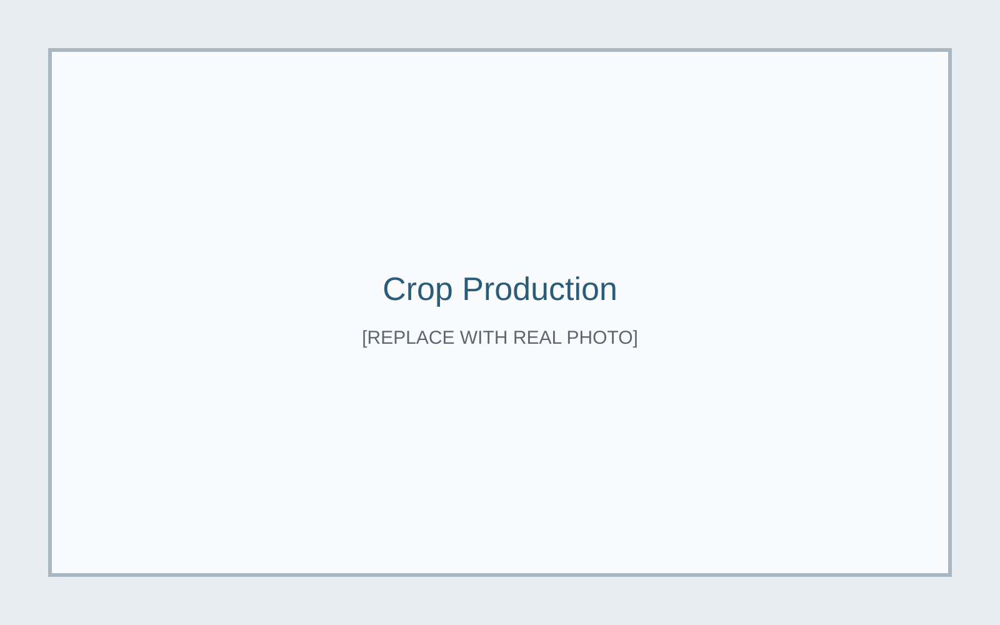

Agricultural Equipment & Field Work

Project Overview
Hands-on agricultural equipment and field operations experience with focus on machinery use, maintenance support, and troubleshooting.
My Role
[ADD SPECIFIC CONTRIBUTION: operation, maintenance, and troubleshooting responsibilities]
Design
[ADD DETAILS IF APPLICABLE: field modifications, setup planning, and equipment constraints]
Manufacturing & Fabrication
[ADD DETAILS IF APPLICABLE: repair fabrication, component replacement, or tooling support]
Testing & Troubleshooting
[ADD TROUBLESHOOTING EXAMPLES: failures observed, diagnostics performed, and outcomes]
Final Result
[ADD SUMMARY OF EQUIPMENT/OPERATIONS OUTCOMES]
What I Learned
[ADD LESSONS LEARNED]



